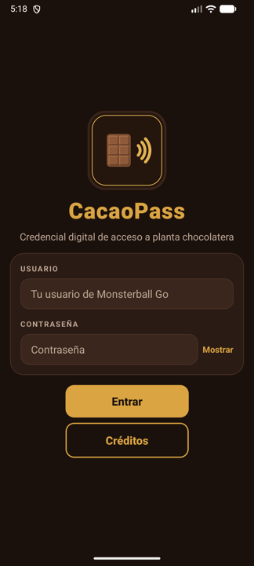
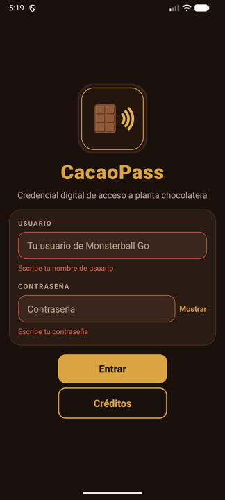
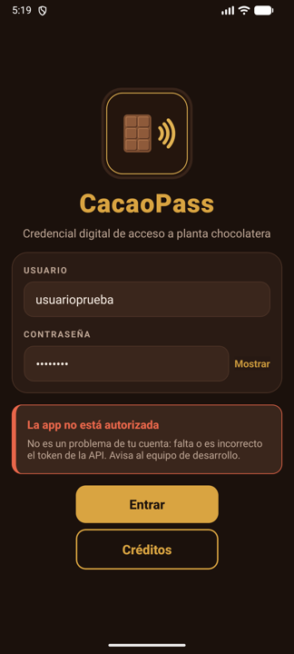
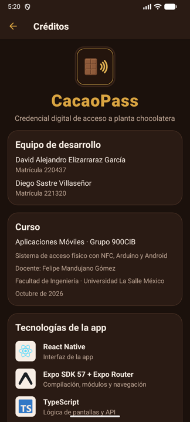
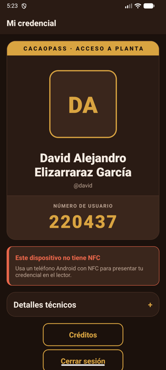
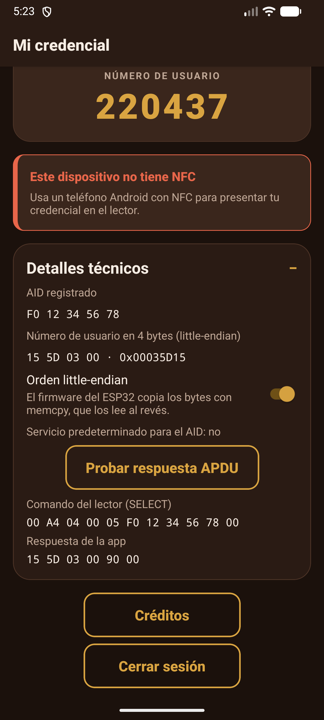

Aplicar conceptos de programación avanzada con React Native y Expo para desarrollar la aplicación móvil cliente de un sistema de acceso físico existente, formado por un escáner NFC (Arduino Nano ESP32 con un lector PN532) y un servidor web. De manera específica, se desarrolla CacaoPass, la credencial digital de una fábrica de chocolates, que autentica al usuario contra la API de la práctica 2, muestra su credencial con foto, nombre completo y número de usuario, y se comunica con el escáner mediante NFC y el protocolo APDU para entregarle ese número en 4 bytes, de modo que sea el escáner quien decida si concede el acceso.
NFC. La comunicación de campo cercano (Near Field Communication) es una tecnología inalámbrica de corto alcance (pocos centímetros) que opera a 13.56 MHz por acoplamiento inductivo entre dos antenas. Se apoya en la norma ISO/IEC 14443 (tipos A y B) y admite tres modos: lector/escritor, en el que el dispositivo lee etiquetas pasivas; punto a punto, entre dos dispositivos activos; y emulación de tarjeta, en el que el dispositivo se comporta como una tarjeta sin contacto ante un lector externo. Este último modo es el que convierte al teléfono en una credencial.
Emulación de tarjeta basada en el anfitrión (HCE). Desde Android 4.4 una aplicación puede emular una tarjeta sin necesidad de un elemento seguro: el controlador NFC entrega los comandos del lector al procesador principal y Android los dirige a un servicio que extiende HostApduService. El servicio declara en un archivo XML los identificadores de aplicación (AID) que atiende, agrupados en la categoría payment o other. Cuando el lector envía un comando SELECT con un AID, Android despierta al servicio registrado para ese AID (aunque la aplicación esté cerrada), le entrega los comandos en processCommandApdu() y le avisa con onDeactivated() cuando el enlace se pierde o el lector selecciona otra aplicación. Si varias aplicaciones registran el mismo AID en la categoría other, la actividad que está en primer plano puede pedir prioridad con CardEmulation.setPreferredService(). El atributo requireDeviceUnlock impide que el servicio responda con el teléfono bloqueado.
Protocolo APDU. La norma ISO/IEC 7816-4 define las unidades de datos de protocolo de aplicación (APDU) con las que un lector y una tarjeta intercambian comandos; sobre NFC viajan encapsuladas por la capa ISO-DEP (ISO/IEC 14443-4). Un comando se compone de un encabezado de cuatro bytes, CLA (clase), INS (instrucción), P1 y P2 (parámetros), seguido opcionalmente de Lc (longitud de los datos), los datos y Le (longitud esperada de la respuesta). La respuesta contiene datos opcionales y dos bytes de estado, SW1 y SW2: 90 00 indica éxito, 69 85 que no se cumplen las condiciones de uso, 6D 00 una instrucción no soportada y 6F 00 un error sin diagnóstico preciso. El comando SELECT por nombre (00 A4 04 00 Lc AID) elige la aplicación con la que se hablará. Un AID mide de 5 a 16 bytes; los que comienzan con F son propietarios, no registrados, adecuados para sistemas cerrados como este, cuyo AID es F0 12 34 56 78.
El escáner. El controlador PN532 de NXP actúa como lector ISO/IEC 14443 y se comunica con el microcontrolador por UART de alta velocidad (HSU), I2C o SPI, según dos interruptores de la placa Elechouse. El firmware del docente usa HSU porque I2C resultó inestable con los intercambios APDU de Android. Con readPassiveTargetID() detecta una tarjeta o teléfono, con inDataExchange() envía el SELECT y, si la respuesta termina en 90 00, toma sus primeros cuatro bytes como número de usuario y lo consulta por HTTP en el servidor, que responde «si» o «no» según el estado del usuario en la base de datos y notifica el intento al panel web por WebSockets.
Orden de los bytes (endianness). Un entero de 32 bits ocupa cuatro bytes, que pueden guardarse empezando por el más significativo (big-endian, el orden de red y el que usan por defecto Java y Kotlin) o por el menos significativo (little-endian). El procesador Xtensa LX7 del ESP32-S3 es little-endian; como el firmware copia los cuatro bytes recibidos a un uint32_t con memcpy, los interpreta en ese orden. Por lo tanto, el número 220437 (0x00035D15) debe enviarse como 15 5D 03 00; enviado como 00 03 5D 15, el escáner leería 358417152.
React Native, Expo y módulos nativos. React Native construye interfaces nativas a partir de componentes de React escritos en TypeScript. Expo añade herramientas y bibliotecas sobre él; su aplicación Expo Go solo incluye los módulos nativos que trae de fábrica, así que una aplicación con código nativo propio requiere una compilación de desarrollo (development build). Con la Generación Nativa Continua, npx expo prebuild genera la carpeta android/ a partir de app.json y de los complementos de configuración, y la API de Módulos de Expo (Expo Modules API) permite escribir módulos en Kotlin con un lenguaje declarativo (Name, Function, Events, eventos del ciclo de vida) que se enlazan automáticamente desde la carpeta modules/; el AndroidManifest.xml del módulo se fusiona con el de la aplicación al compilar. Para el estado se usan los hooks de React (useState, useEffect) y un contexto (createContext) para compartir la sesión entre pantallas; la navegación se resuelve con Expo Router, donde cada archivo de src/app/ es una ruta.
Autenticación y almacenamiento. La API de Monsterball Go recibe el usuario y el resumen SHA-256 de la contraseña en un formulario (POST /api/login) y, como se documentó en la práctica 2, responde con HTTP 200 aun cuando el acceso falla, por lo que el resultado real está en el campo error. Para recordar la sesión se usa expo-secure-store, que en Android cifra los datos con una clave del Android Keystore. Las variables de entorno con prefijo EXPO_PUBLIC_ se incrustan en el código empaquetado: sirven para no publicar el token en el repositorio, pero no lo vuelven secreto dentro del APK.
Usabilidad. Se aplican las heurísticas de Nielsen: visibilidad del estado del sistema (H1: estado del NFC y aviso de «Lector detectado»), prevención de errores (H5: validación de campos antes de llamar al servidor) y ayuda para reconocer y recuperarse de errores (H9: mensajes en lenguaje llano con una acción concreta).
| CANTIDAD | MATERIAL Y EQUIPO |
|---|---|
| 1 | Computadora personal MacBook Pro (Intel) con macOS, Node.js 22.18 y npm 10.9 |
| 1 | Expo SDK 57 (expo 57.0.31), React Native 0.86.3, React 19.2.3, Expo Router 57.0.29 y TypeScript 6.0, con expo-crypto, expo-secure-store, expo-image y react-native-svg |
| 1 | Android Studio con Android SDK, Amazon Corretto JDK 17 y Gradle 9.3.1 para compilar el proyecto nativo |
| 1 | Dispositivo virtual Android (AVD) para probar la interfaz; el emulador no tiene NFC |
| 1 | Teléfono Android con NFC y soporte HCE para la demostración: [marca, modelo y versión de Android] |
| 1 | Escáner NFC proporcionado por el docente: Arduino Nano ESP32 con lector Elechouse PN532 v3 en modo HSU y firmware ScannerHTTP.ino |
| 1 | Servidor del sistema en monsterballgo.com: API de usuarios, endpoint del escáner y panel web de visualización |
| 1 | Arduino IDE y Visual Studio Code para revisar el firmware y editar el código |
| 1 | Asistente de programación con IA (Claude Code) como apoyo para escribir código, gráficos y documentación |
1. Análisis del sistema existente. Antes de programar se revisó el repositorio del docente (NFCAccesoFisico), que contiene el firmware, el servidor en Node.js con Express y la aplicación nativa de ejemplo en Kotlin. Del firmware se obtuvieron los tres datos que la aplicación debe respetar: el AID F0 12 34 56 78, que la respuesta debe terminar en 90 00 y que el número de usuario se toma de los primeros cuatro bytes con memcpy, es decir, en orden little-endian. También se observó que el firmware reserva el último byte 0xFE y 0xDE para las dos credenciales de la aplicación de ejemplo (DEADCAFE y DEADC0DE). Del servidor se confirmó que el endpoint del escáner busca el número de usuario en la tabla user y concede el acceso solo si su estado es active. La figura 1 resume el flujo completo.
2. Creación y organización del proyecto. Se creó el proyecto con create-expo-app en la plantilla de Expo SDK 57, la misma versión de la práctica 3, y se eliminaron los componentes de ejemplo. El código quedó organizado así: src/app (rutas index de acceso, credencial, creditos y el _layout con un Stack), src/api (cliente de la API), src/session.tsx (contexto de sesión), src/components (AppButton, Notice, TechItem), src/data (equipo, curso y tecnologías), los archivos theme.ts y styles.ts, y el módulo nativo en modules/cacao-hce.
3. Nombre, logotipo e identidad visual. Para una fábrica de chocolates se eligió el nombre CacaoPass y una paleta cálida y sobria: cacao oscuro (#1B110C, #2A1B14) para fondos y superficies, crema (#F7EDE4) para el texto, dorado de envoltura (#D9A441) como único color de acción, verde para estados correctos y rojo terracota para errores. El logotipo combina una barra de chocolate con tres ondas NFC doradas, de modo que comunica a la vez el giro de la empresa y la función de la aplicación. Se dibujó por programa con Core Graphics (tools/make_icons.swift), que genera el ícono, las capas del ícono adaptable de Android (fondo, primer plano y monocromático para los íconos temáticos) y la pantalla de bienvenida (figura 2).
4. Pantalla de acceso. Muestra el logotipo, el nombre y un lema, los campos de usuario y contraseña, el botón «Entrar» y el botón «Créditos». Los campos vacíos se validan antes de llamar al servidor y el error aparece debajo del campo (H5); mientras se verifica la identidad, el botón muestra un indicador de progreso y se deshabilita para evitar peticiones duplicadas (H1). La función login() calcula el SHA-256 de la contraseña con expo-crypto, envía el formulario con un tiempo límite de 15 s y traduce cada situación a un mensaje propio (tabla 1); el texto del servidor nunca se muestra porque puede incluir la consulta SQL. Las URL de las fotos de perfil llegan con http://, que Android bloquea, y se convierten a https://.
| SITUACIÓN | CÓMO SE DETECTA | MENSAJE AL USUARIO |
|---|---|---|
| Campos vacíos | Validación local | «Escribe tu nombre de usuario» / «Escribe tu contraseña» |
| Usuario o contraseña incorrectos | {"error": "Failed to login"} con HTTP 200 | «Usuario o contraseña incorrectos». Revisa mayúsculas y minúsculas. |
| Token ausente o rechazado | Token vacío o {"error": "Unauthorized"} | «La app no está autorizada». No es un problema de tu cuenta. |
| Sin red | Excepción de fetch | «Sin conexión con el servidor». Revisa Wi-Fi o datos. |
| Servidor lento o caído | Tiempo límite de 15 s / HTTP 5xx | «El servidor tardó demasiado» / «El servidor tuvo un problema» |
| Respuesta inválida | JSON inválido o número de usuario fuera de 32 bits | «Respuesta inesperada del servidor» |
5. Imagen de perfil. Se cambió la imagen de perfil de cada integrante con el endpoint POST /api/setpfp de la API, que recibe el token, el número de usuario y un archivo JPG o PNG de máximo 2 MB [indicar si se usó la app de la tarea 10 o la API directamente, y agregar las imágenes utilizadas].
6. Módulo nativo de emulación de tarjeta. Ninguna biblioteca de React Native para NFC permite contestar comandos APDU arbitrarios en modo HCE, así que se escribió un módulo local con la API de Módulos de Expo (modules/cacao-hce). Su AndroidManifest.xml declara los permisos NFC y VIBRATE y el servicio CacaoApduService protegido con BIND_NFC_SERVICE, y el archivo res/xml/cacao_apduservice.xml registra el AID F012345678 en la categoría other con requireDeviceUnlock="true". La lógica del protocolo se separó en el objeto ApduProtocol, sin dependencias de Android, para poder probarla sin lector:
fun userIdToBytes(userId: Int, littleEndian: Boolean): ByteArray {
val bigEndian = byteArrayOf((userId shr 24).toByte(), (userId shr 16).toByte(),
(userId shr 8).toByte(), userId.toByte())
return if (littleEndian) bigEndian.reversedArray() else bigEndian
}
fun respond(apdu: ByteArray?, userId: Int?, littleEndian: Boolean): ByteArray = when {
apdu == null -> SW_NO_PRECISE_DIAGNOSIS // 6F 00
!isSelectAid(apdu) -> SW_INS_NOT_SUPPORTED // 6D 00
userId == null -> SW_CONDITIONS_NOT_SATISFIED // 69 85
else -> userIdToBytes(userId, littleEndian) + SW_OK // 4 bytes + 90 00
}
Como Android puede despertar al servicio con la aplicación cerrada, cuando la parte de JavaScript no está corriendo, el número de usuario se guarda del lado nativo en SharedPreferences (CredentialStore). Al recibir el SELECT, el servicio vibra 120 ms y emite el evento onReaderDetected por un puente estático (HceEvents) que el módulo reenvía a JavaScript. El módulo CacaoHceModule expone setCredential, clearCredential, getStatus (si hay NFC, si está encendido, si hay HCE y si el servicio es el predeterminado para el AID), setLittleEndian, simulateSelect y openNfcSettings, y al pasar la actividad a primer plano llama a setPreferredService para ganar el AID si en el mismo teléfono está instalada la aplicación de ejemplo, que usa el mismo identificador.
7. Sesión y pantalla de credencial. Al iniciar sesión, el contexto SessionProvider entrega el número de usuario al servicio y guarda los datos del usuario (sin la contraseña) en expo-secure-store, de modo que la credencial esté lista al llegar a la puerta sin volver a escribir la contraseña. La pantalla «Mi credencial» tiene forma de gafete: franja dorada «CACAOPASS · ACCESO A PLANTA», foto de perfil (con iniciales como sustituto si no carga), nombre completo en letra grande y el número de usuario de forma prominente. Debajo, un aviso indica el estado del NFC (sin NFC, sin HCE, apagado con botón para abrir los ajustes, o «Credencial lista»), y se actualiza al volver a la aplicación. Cuando el escáner selecciona el AID, además de la vibración, un anillo verde se anima alrededor de la foto y aparece «Lector detectado» con la hora en que se envió el número; la aplicación no indica si se concedió el acceso, porque no lo sabe ni consulta el endpoint del escáner. La sección «Detalles técnicos» muestra el AID, los cuatro bytes que se enviarán, un interruptor para cambiar el orden de los bytes y el botón «Probar respuesta APDU», que ejecuta la misma lógica del servicio con un SELECT idéntico al del firmware. «Cerrar sesión» pide confirmación y borra la credencial del servicio.
8. Pantalla de créditos. Lista a los integrantes con su matrícula, el grupo, el docente, la fecha y dos bloques de tecnologías con su logotipo oficial: las de la aplicación (React Native, Expo y Expo Router, TypeScript, Kotlin y Android HCE) y las del sistema de acceso (Arduino Nano ESP32, ESP32-S3, PN532, Node.js, Express y MySQL). Los logotipos se tomaron de Simple Icons (licencia CC0) y se dibujan como SVG con react-native-svg; un guion (tools/extract-logos.mjs) copia solo los diez trazos necesarios para no empaquetar los más de tres mil íconos de la biblioteca.
9. Compilación y pruebas sin lector. Se generó el proyecto nativo con npx expo prebuild y se compiló con npx expo run:android usando JDK 17; el primer compilado tardó 28 min 43 s porque Gradle descargó el NDK, CMake y la plataforma 36 del SDK y compiló las bibliotecas nativas de React Native para x86_64. Se escribieron siete pruebas unitarias con JUnit para ApduProtocol que, entre otras cosas, imitan el memcpy del firmware y comprueban que el escáner lee exactamente el número enviado; las siete pasaron (gradlew :cacao-hce:testDebugUnitTest, 0 fallas, 0 errores). En el emulador se probaron la validación de campos, el mensaje cuando falta el token de la API, el aviso de falta de NFC y el botón «Probar respuesta APDU», que ejecuta el código en Kotlin y devolvió 15 5D 03 00 90 00 ante el mismo SELECT que envía el firmware (figuras 4 y 5).






10. Compilación final y prueba con el escáner. Para la demostración se generó un APK independiente con npx expo run:android --variant release y se instaló en el teléfono. Se probó con el usuario de cada integrante, uno de los cuales fue suspendido previamente por el docente en la base de datos [resultados de la sesión de clase].
La aplicación cumple los requisitos de la asignación: está hecha con React Native y Expo; tiene pantalla de acceso con usuario, contraseña, logotipo y nombre acordes con una fábrica de chocolates; tras autenticarse muestra la credencial con la imagen del usuario, su nombre completo y su número de usuario; entrega ese número en 4 bytes al escáner mediante NFC y APDU; avisa al usuario con vibración y un mensaje en pantalla cuando detecta el escáner, sin indicar el resultado ni consultar el endpoint del escáner; y la pantalla principal tiene el botón de créditos con los integrantes, el grupo, la fecha y el tech stack con logotipos oficiales.
El factor que más contribuyó fue leer el firmware antes de escribir la aplicación. La aplicación de ejemplo convierte el número a bytes en orden big-endian y aun así funciona, pero solo porque el firmware reconoce sus dos credenciales por el último byte. Con un número de usuario real, ese mismo orden habría hecho que el escáner consultara el usuario 358417152 en lugar del 220437, el servidor no lo habría encontrado y el acceso se habría negado sin ningún error visible en el teléfono: la aplicación habría «funcionado» (el lector la detecta y vibra) y aun así habría fallado. Las pruebas unitarias que imitan el memcpy del firmware convierten esa suposición en algo verificable, y el interruptor de orden de bytes permite corregirlo en la demostración si el firmware cambia.
Problemas encontrados y soluciones:
69 85 cada vez que Android hubiera cerrado la aplicación. Se guardó del lado nativo en SharedPreferences, y la sesión en expo-secure-store.setPreferredService mientras CacaoPass está en primer plano, y «Detalles técnicos» muestra si el servicio es el predeterminado..env.local, archivo ignorado por git; se documentó que, por el prefijo EXPO_PUBLIC_, sigue incrustado en el APK.expo run:android se ejecutó con CI=1, que desactiva la recarga de Metro y sirve siempre el primer empaquetado. Se detuvo ese servidor y se levantó otro con npx expo start --dev-client, abriendo la aplicación con el enlace cacaopass://expo-development-client/?url=....adb screencap sin indicar cuál devolvía una advertencia en lugar de una imagen; se resolvió con la opción -d y el identificador de la pantalla principal.EACCES) y se usó una caché alterna; el JDK del sistema (23) y el de Android Studio (25) son más nuevos que lo recomendado para React Native, por lo que se compiló con JDK 17; y expo run:android --device espera el nombre del AVD, no el identificador de adb.| # | PRUEBA | ENTORNO | RESULTADO ESPERADO | RESULTADO OBTENIDO |
|---|---|---|---|---|
| 1 | Respuesta APDU y lectura con memcpy (7 pruebas JUnit) | JVM | El escáner lee el mismo número enviado | Correcto: 7 de 7 |
| 2 | Campos vacíos | Emulador | Mensaje debajo de cada campo, sin petición | Correcto (figura 4) |
| 3 | Sin token de la API configurado | Emulador | «La app no está autorizada», sin petición al servidor | Correcto (figura 4) |
| 4 | Contraseña incorrecta y modo avión | Emulador | «Usuario o contraseña incorrectos» / «Sin conexión con el servidor» | [pendiente: requiere el token] |
| 5 | Credencial y «Probar respuesta APDU» en equipo sin NFC | Emulador | Aviso «Este dispositivo no tiene NFC» y respuesta 15 5D 03 00 90 00 | Correcto (figura 5) |
| 6 | NFC apagado | Teléfono | Aviso y botón a los ajustes de NFC | [ ] |
| 7 | Usuario activo frente al escáner | Teléfono + escáner | Vibración, «Lector detectado», LED verde y registro en el panel | [ ] |
| 8 | Usuario suspendido frente al escáner | Teléfono + escáner | Vibración, «Lector detectado», LED rojo y registro en el panel | [ ] |
| 9 | Teléfono bloqueado frente al escáner | Teléfono + escáner | No responde hasta desbloquear | [ ] |
También se identificaron limitaciones del sistema en su conjunto. La credencial es un número fijo de 4 bytes que viaja en claro: cualquiera que lo lea (otro lector, o un teléfono con el número de otra persona) puede reproducirlo, y el escáner no tiene forma de saber que la respuesta viene del teléfono legítimo. El escáner consulta al servidor por HTTP sin cifrar con un token fijo en la URL, de modo que alguien en la misma red podría falsificar la respuesta «si». Recordar la sesión agiliza el paso por la puerta, pero convierte al teléfono desbloqueado en la llave: requireDeviceUnlock mitiga el robo de un teléfono bloqueado, no el préstamo de uno desbloqueado. Y si el Wi-Fi o el servidor fallan, nadie puede entrar, porque el escáner no conserva ninguna lista local.
WiFiClientSecure y el certificado del servidor fijado, token por dispositivo en un encabezado y respuestas firmadas con un nonce para evitar falsificaciones.[PENDIENTE: redactar con sus propias palabras.] Párrafo 1: justificación dirigida a una empresa hipotética del ramo chocolatero sobre las ventajas de adquirir el sistema. Párrafo 2: desventajas, riesgos o detrimentos, desde el punto de vista del usuario, de obligarle a cargar su credencial en una aplicación móvil. Ver reporte/guia_conclusiones.md.
Arduino. (s.f.). Nano ESP32. Arduino Documentation. Recuperado el 26 de octubre de 2026, de https://docs.arduino.cc/hardware/nano-esp32/
Elechouse. (s.f.). PN532 NFC RFID module user guide (versión 3). Recuperado el 26 de octubre de 2026, de https://www.elechouse.com/elechouse/images/product/PN532_module_V3/PN532_%20Manual_V3.pdf
Espressif Systems. (s.f.). ESP32-S3 technical reference manual. Recuperado el 26 de octubre de 2026, de https://www.espressif.com/sites/default/files/documentation/esp32-s3_technical_reference_manual_en.pdf
Expo. (s.f.). Expo Modules API: Overview. Expo Documentation. Recuperado el 26 de octubre de 2026, de https://docs.expo.dev/modules/overview/
Expo. (s.f.). Introduction to development builds. Expo Documentation. Recuperado el 26 de octubre de 2026, de https://docs.expo.dev/develop/development-builds/introduction/
Expo. (s.f.). Environment variables in Expo. Expo Documentation. Recuperado el 26 de octubre de 2026, de https://docs.expo.dev/guides/environment-variables/
Expo. (s.f.). SecureStore. Expo Documentation. Recuperado el 26 de octubre de 2026, de https://docs.expo.dev/versions/latest/sdk/securestore/
Google. (s.f.). Host-based card emulation overview. Android Developers. Recuperado el 26 de octubre de 2026, de https://developer.android.com/develop/connectivity/nfc/hce
Google. (s.f.). CardEmulation. Android Developers. Recuperado el 26 de octubre de 2026, de https://developer.android.com/reference/android/nfc/cardemulation/CardEmulation
International Organization for Standardization. (2018). Cards and security devices for personal identification — Contactless proximity objects — Part 4: Transmission protocol (ISO/IEC 14443-4:2018).
International Organization for Standardization. (2020). Identification cards — Integrated circuit cards — Part 4: Organization, security and commands for interchange (ISO/IEC 7816-4:2020).
Mandujano, F. (2026). NFCAccesoFisico [Repositorio de código]. GitHub. https://github.com/fmg2099/NFCAccesoFisico
Monsterball Go. (s.f.). Documentación de la API «Monsterball Go». Recuperado el 26 de octubre de 2026, de https://monsterballgo.com/docs
Nielsen, J. (2024). 10 usability heuristics for user interface design. Nielsen Norman Group. Recuperado el 26 de octubre de 2026, de https://www.nngroup.com/articles/ten-usability-heuristics/
Simple Icons. (s.f.). Simple Icons: Free SVG icons for popular brands. Recuperado el 26 de octubre de 2026, de https://simpleicons.org